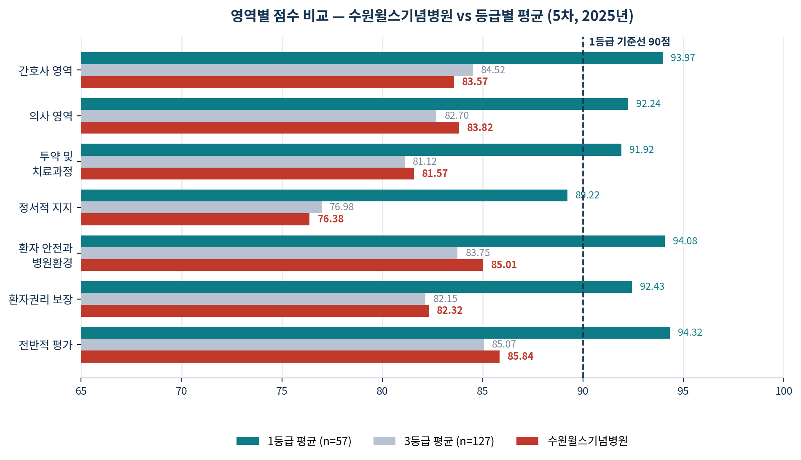
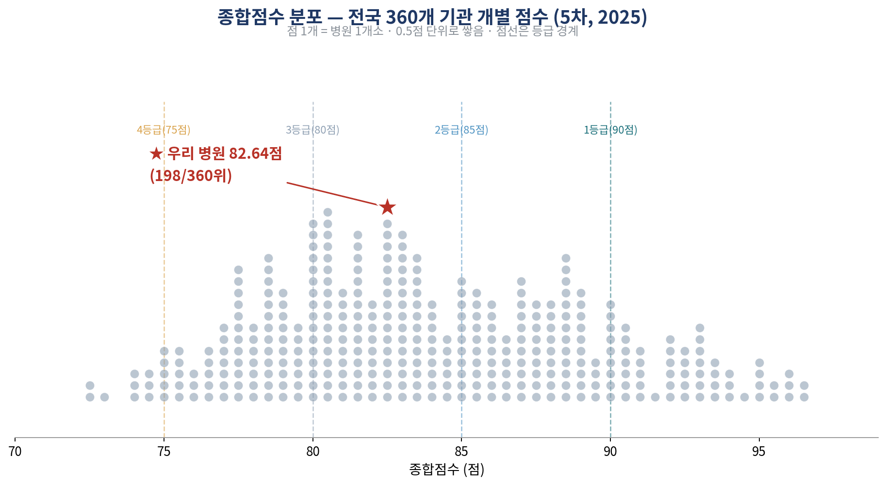
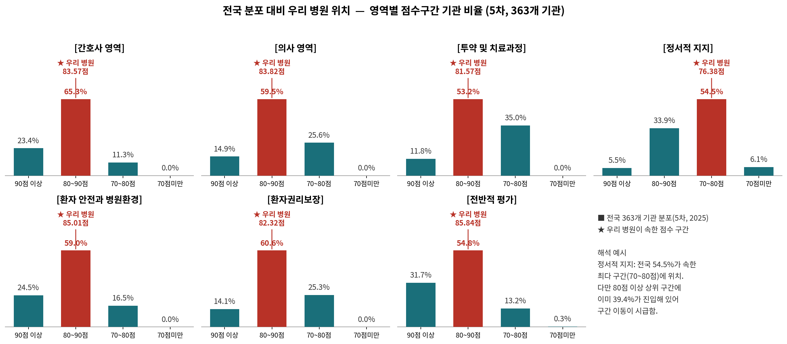
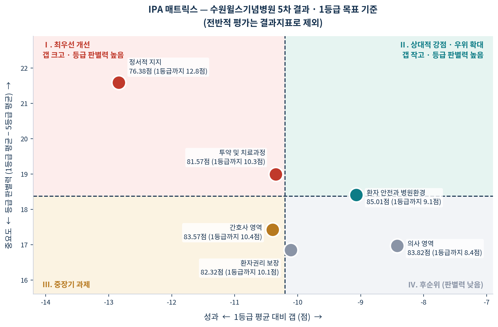
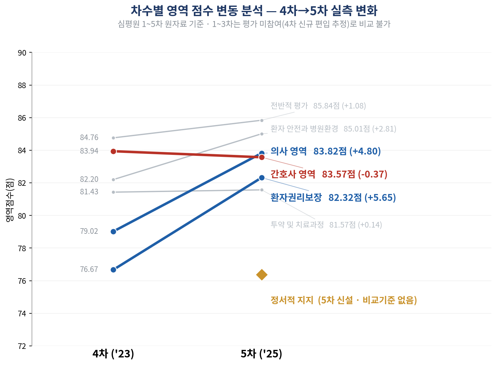

수원윌스기념병원 · 경영진 보고
현재 3등급 82.64점 · 360개소 중 198위 → 목표 1등급 90점 이상
| 보고일 | 2026.8.4 | 보고 대상 | 병원장 및 경영진 |
| 작성 부서 | QI팀 | 작성자 | OOO |
※ 수치는 2026.7.31 심평원 공개 5차 환자경험평가 기관별 결과 직접 분석값입니다. 종합점수=7개 영역 산술평균이며, 등급경계와 360개 기관 전수 대조로 검증했습니다.
1.개요 및 결과 요약
1-1. 목표 설정 — 1등급은 2단계로 도달
6차(2026.9~11) 단일 차수 1등급 목표는 실패 위험이 큽니다. 최근 2년 개선 실적 +2.35점 < 필요 상승 +7.36점이며, 5차→6차는 평가주기가 1년으로 단축되었습니다. 1등급을 최종 목표로 확정하되 2단계로 구분합니다.
| 단계 | 시점 | 목표 종합점수 | 목표 등급 | 필요 상승 |
|---|---|---|---|---|
| 1단계 | 6차(2026.9~11) | 86.00점 | 2등급 | +3.36점 |
| 2단계 | 7차(차기) | 90.57점 | 1등급 | +4.57점 |
1-2. 핵심 결론
현재: 종합점수는 82.64점으로 3등급 평균(82.33점)을 소폭 웃도는 중위권 수준입니다. 다만 최근 2년간 개선 속도(+2.35점)는 전체 기관 평균 상승폭(+3.61점)에 못 미치고 있습니다.
목표: 6차에서 2등급(86.00점)에 먼저 진입한 뒤, 7차에서 1등급(90.57점)을 달성하는 2단계 로드맵으로 추진합니다.
최우선 과제: 정서적 지지입니다. 1등급 병원과 5등급 병원 간 점수 격차가 7개 영역 중 가장 크며, 우리 병원 점수도 최저이고 1등급까지 격차 역시 가장 큽니다.
결정 요청: 경영진 결정이 필요한 사항은 총 5건이며, 8월 10일까지 승인이 이뤄져야 8월 중 착수가 가능합니다.
2.영역별 성과 분석
2-1. 영역별 점수 비교 — 우리 병원 vs 등급별 평균 (5차, 2025)
[차트1] 영역별 점수 비교 — 수원윌스기념병원 vs 등급별 평균 (5차, 2025년)

연두 계열(1등급 평균)·회색(3등급 평균)·빨강(우리 병원). 점선은 1등급 기준선 90점.
| 평가 영역 | 우리 병원 | 3등급 평균 대비 | 1등급 평균 대비 | ||
|---|---|---|---|---|---|
| 평균 | 갭 | 평균 | 갭 | ||
| 간호사 영역 | 83.57 | 84.52 | ▼ −0.95 | 93.97 | ▼ −10.40 |
| 의사 영역 | 83.82 | 82.70 | ▲ +1.12 | 92.24 | ▼ −8.42 |
| 투약 및 치료과정 | 81.57 | 81.12 | ▲ +0.45 | 91.92 | ▼ −10.35 |
| 정서적 지지 | 76.38 | 76.98 | ▼ −0.60 | 89.22 | ▼ −12.84 |
| 환자 안전·병원환경 | 85.01 | 83.75 | ▲ +1.26 | 94.08 | ▼ −9.07 |
| 환자권리 보장 | 82.32 | 82.15 | ▲ +0.17 | 92.43 | ▼ −10.11 |
| 전반적 평가 | 85.84 | 85.07 | ▲ +0.77 | 94.32 | ▼ −8.48 |
| 종합점수 | 82.64 | 82.33 | ▲ +0.32 | 92.60 | ▼ −9.95 |
빨간 정서적 지지는 3등급 평균보다도 낮은 유일한 항목입니다.
정서적 지지: 76.38점으로 7개 영역 중 최저점이며, 1등급 평균(89.22점)까지 격차가 −12.84점으로 가장 큽니다. 1등급 기관조차 이 영역만큼은 90점을 넘지 못해, 아직 어느 병원도 완전히 장악하지 못한 구간입니다. 최우선 개선 대상으로 선정합니다.
간호사 영역: 83.57점으로, 7개 영역 중 유일하게 3등급 평균(84.52점)에도 미치지 못하고 있습니다. 간호·간병 통합서비스를 운영 중인 병원이라는 점을 감안하면, 통합병동과 일반병동을 분리하여 원인을 규명할 필요가 있습니다.
2-2. 종합점수 분포
[차트] 종합점수 분포 — 전국 360개 기관 개별 점수 (5차, 2025)

점 1개 = 병원 1개소 · 0.5점 단위로 쌓음 · 점선은 등급 경계 · ★ 우리 병원 82.64점 (198/360위)
80~83점 구간이 가장 두텁게 몰려 있어 전체 분포의 정점을 이루며, 우리 병원(82.64점)도 바로 이 정점 부근에 위치합니다. 가장 붐비는 구간에 있다는 것은 경쟁이 가장 치열하다는 뜻으로, 소폭 개선만으로는 순위가 잘 오르지 않습니다.
2-3. 전국 분포 대비 우리 병원 위치
전국 분포 대비 우리 병원 위치 — 영역별 점수구간 기관 비율 (5차, 363개 기관)

청록: 전국 363개 기관 분포 · 빨강★: 우리 병원 해당 구간
정서적 지지는 전국 최다 구간(70~80점, 54.5%)에 속해 이례적이지 않으나, 이미 80점 이상 상위 구간에 39.4%가 진입해 있어 구간 이동이 시급합니다. 나머지 6개 영역은 대부분 전국 최다 구간(80~90점)에 위치합니다.
3.개선 우선순위
7개 영역을 가로축(1등급까지 남은 갭)과 세로축(1등급 병원과 5등급 병원 간 점수 격차) 두 기준으로 나누어 어디부터 손대야 할지 시각화했습니다. 전반적 평가는 결과지표로 제외합니다.
[차트2] IPA 매트릭스 — 수원윌스기념병원 5차 결과 · 1등급 목표 기준

I 최우선 개선 · II 상대적 강점 · III 중장기 과제 · IV 후순위 (전반적 평가는 결과지표로 제외)
3-3. 차수별 영역 점수 변동 분석
차수별 영역 점수 변동 분석 — 4차→5차 실측 변화

심평원 1~5차 원자료 기준 · 1~3차는 평가 미참여로 비교 불가 · 정서적 지지는 5차 신설
우리 병원은 4차(2023)부터 신규 편입되어 1~3차 데이터가 없습니다. 4차→5차 두 시점 비교에서 하락 영역과 급개선 영역이 뚜렷이 갈렸습니다.
4.실행 계획
Phase 1(8월, 조사 전 정비) → Phase 2(9~11월, 조사 운영) → Phase 3(12월~, 1등급 기반 구축)의 3단계 중 경영진 결정이 필요한 Phase 1 핵심 과제입니다.
| 순위 | 개선 과제 | 담당 | 6차 목표 | 기한 |
|---|---|---|---|---|
| 1 | 정서적 지지 — 위로·공감 응대 표준화 및 전 직원 교육 | 진료부·간호부 | +6.62 | 8/31 |
| 2 | 투약·검사·처치 설명 스크립트 표준화 | 간호부·진료지원 | +3.43 | 8/31 |
| 3 | 회진시간 사전 고지 체계 도입 | 진료부 | +2.68 | 8/20 |
| 4 | 간호 응대 병동 편차 진단 (통합/일반 분리) | QI팀·간호부 | +3.43 | 8/25 |
| 5 | 환자 안전·환경 우위 확대 (소음·청결·본인확인) | 시설·간호부 | +2.49 | 9월 內 |
| 6 | 진료비·권리 안내 개선 | 원무 | +3.18 | 10월 |
정서적 지지는 1등급 병원과 5등급 병원 간 점수 격차가 7개 영역 중 가장 커서, 병원 수준을 가장 뚜렷하게 반영하는 영역입니다. 우리 병원의 최저점(76.38점)이자 1등급까지 격차도 가장 큽니다(−12.84점). 시설투자나 인력증원 없이 응대 개선만으로 4주 내 실행이 가능합니다.
Phase 2·3 요약
5.기대효과 및 의사결정 요청
기대효과
미실행 시 리스크
경영진 의사결정 요청 (5건)
QI팀 권한으로는 실행할 수 없으며, 경영진 결정이 있어야 8월 중 착수가 가능합니다.
| No | 요청 사항 | 필요 사유 | 기한 |
|---|---|---|---|
| 1 | 1등급 2단계 로드맵 승인 (6차 2등급→7차 1등급) | 6차 단일 1등급은 달성확률 낮음 | 8/10 |
| 2 | 정서적 지지 교육 예산 승인 및 전 직원 필수 이수 지정 | 등급별 점수 격차 최대·최저점 영역 | 8/10 |
| 3 | 회진시간 사전 고지, 병원장 지시사항으로 전 진료과 시행 | 진료부 협조 없이 불가 | 8/10 |
| 4 | 환자경험 TF 구성 승인 (QI·진료부·간호부·원무·시설) | 전 병원 과제, 상설 협의체 필요 | 8/10 |
| 5 | 6차 조사기간(9~11월) VOC 대응 전담 인력 지정 | 미해결 불만이 설문응답에 직결 | 8/25 |